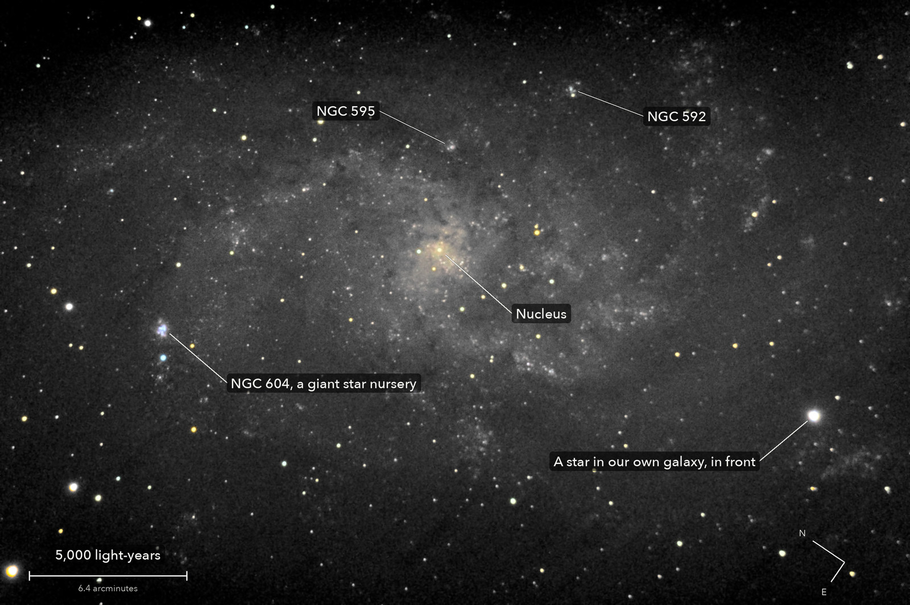

The Triangulum Galaxy
Messier 33, a spiral galaxy in Triangulum
The third-largest galaxy in our small group of neighbours, after Andromeda and our own Milky Way: a loose spiral of some 40 billion stars. The blue knot at the left, NGC 604, is a cloud where new stars are being born, 1,500 light-years across. From this far away, one pixel of the picture is 10 light-years wide: more than twice the way from the Sun to the nearest star.
What you are looking at

Swipe sideways to see the rest. Tap the picture for full size.
- Distance
- About 2.7 million light-years
- This picture spans
- 29,000 light-years; the whole galaxy is about twice that
- The light left
- 2.7 million years ago, as the ice ages began
- Honest note
- The disc is grey on purpose: these frames cannot measure its faint colour. White stars lean a little green
Photography notes
66 of 104 frames of 15 s; 34 were trailed by a tracking fault that was fixed during the run. 16.5 minutes of light on one field, under a clear sky.
Equipment
- Telescope
- Celestron 8SE Schmidt-Cassegrain: 203 mm aperture, 2,083.5 mm focal length by plate solve of this stack, f/10.3
- Camera
- Sony a6000, stock, at prime focus: APS-C 23.5 x 15.6 mm, 6000 x 4000, 3.9 micron pixels, RAW
- Mount
- Sky-Watcher EQ6-R, unguided. Set down without polar alignment, about 5 degrees off the pole; aligned from four plate-solved photos (about 1 arcminute), both axes driven from that model
Acquisition
- Exposures
- 66 x 15 s at ISO 3200: 16.5 minutes
- Frames
- 104 taken, 66 kept. 34 frames were trailed by a tracking fault that was fixed during the run: the drive let go of both motors for about 5 s now and then, leaving each star a dot with a tail of 4 to 9 arcsec. 4 more had soft stars (4.4 to 4.7 arcsec). Clear: every untrailed frame within 5 percent of the run's star brightness
- Sampling
- 0.776 arcsec per pixel: one pixel per 2 x 2 colour cell, never enlarged. Stars 3.6 arcsec wide (half-flux), against 3.9 on 8 October
- Field
- 36.8 x 24.5 arcmin: the part of one sensor frame that at least 53 of the 66 frames cover, as the camera saw it (north 56 degrees anticlockwise of up). Not turned: a turn would resample the picture
- When
- 13 October 2026, after midnight, over 72 minutes. High in the sky, about 80 degrees up
- Field rotation
- 1.7 degrees over the run, because the polar axis is about 5 degrees off; corrected in registration (rotation and shift on 65 to 73 stars, 0.3 to 0.5 px rms)
- Calibration
- No darks and no flat frames were taken. Vignetting: the radial profile measured on 8 October from open sky, same telescope, camera and settings (corners at 69 percent); the galaxy fills tonight's frames, so it cannot be checked. Dust: 10 shadows found in tonight's own frames and divided out, each only where both halves of the run show it alike. Hot pixels from the run itself (5,700 to 6,500 per colour plane)
Processing
- Stacking
- RAW colour planes (no demosaic), hot pixels by 3 x 3 median, registered on stars with rotation, sigma-clipped weighted mean. One constant per colour per frame, set where the galaxy is faintest; no surface fitted. Noise 7.8 times lower than one frame (8.1 expected from the weights), and half that of 8 October's picture of this field, which had a third of the light (5.25 minutes)
- Zero level
- The galaxy is bigger than the frame, so the true sky cannot be measured: zero is the galaxy's faintest part in this field. The black point was raised for a quiet sky, which leaves about 2 percent of the picture, the darkest sky, exactly black
- Colour
- Shown only where the light can carry it, 0.4 percent of the picture: the stars, the core, the brightest star-forming clouds such as NGC 604. The disc is grey on purpose. White stars come out slightly green (red : green : blue about 0.91 : 1 : 0.94): the camera's daylight white balance and matrix, with no star-colour calibration
- Finish
- The camera's daylight white balance and colour matrix. Brightness smoothed 1 px, arcsinh stretch. Black at the 14th percentile, gamma 0.9, S-curve 0.3, saturation x 1.25. Dark sky smoothed (bilateral, 3 px) and without colour
- Picture size
- 2844 x 1892 pixels
- Software
- Capture and mount: Observatory (Elixir on a Raspberry Pi 3). Stacking: numpy, OpenCV, rawpy. Plate solving: astrometry.net. Stacked from the camera's RAW frames. Nothing generated.
What the picture shows
- Known flaws
- Stars towards the corners have a short flare pointing away from the centre: the optics off axis, not the tracking. Two shallow dust shadows near the middle could not be confirmed tonight and were left alone
Everything above as Markdown, ready to paste into a forum post.
© 2026 Brad Gessler · Celestron 8SE (8 inch, f/10.3) and Sony a6000 on an EQ6-R · San Francisco Bay Area · night of 12 October 2026
© 2026 Brad Gessler. The pictures and the words are his own; all rights reserved.